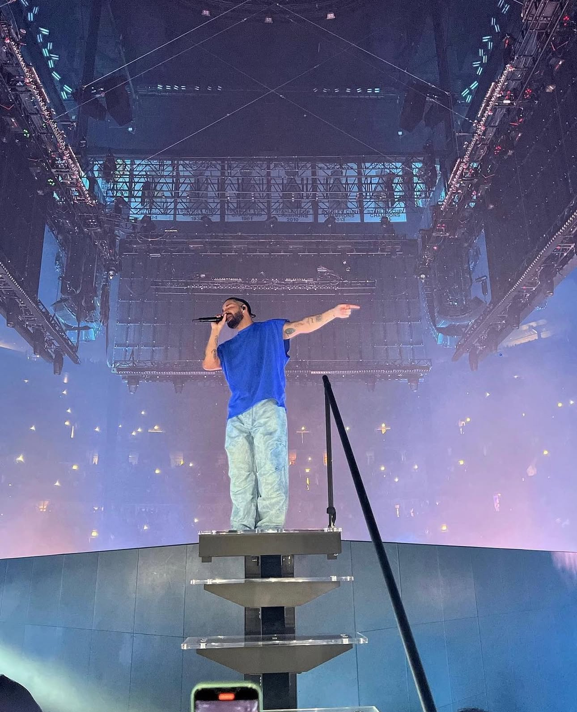

Early Life and Acting Career
Drake was born to Dennis Graham, an African-American drummer for Jerry Lee Lewis, and Sandi Graham, a Canadian Jewish educator. He attended Forest Hill Collegiate Institute, where he developed an interest in the arts. In 2001, Drake began his acting career, portraying Jimmy Brooks on "Degrassi: The Next Generation", a role he held until 2009.
Transition to Music and Rise to Fame
While still acting, Drake released his debut mixtape, "Room for Improvement," in 2006, followed by "Comeback Season" in 2007. His third mixtape, "So Far Gone" (2009), featured the hit single "Best I Ever Had", propelling him into the music spotlight. In 2010, he released his debut studio album, "Thank Me Later", which debuted at number one on the Billboard 200.
Discography
- Thank Me Later (2010)
- Take Care (2011)
- Nothing Was the Same (2013)
- Views (2016)
- Scorpion (2018)
- Certified Lover Boy (2021)
- Honestly, Nevermind (2022)
- For All the Dogs (2023)
Notable Achievements and Media Highlights
- Multiple Grammy Awards, including Best Rap Album for "Take Care"
- Record for most charted songs among solo artists in the history of the Billboard Hot 100
- Founder of OVO Sound record label
Gallery

More About Drake
Visit his official website to learn more about his music and career.
Check out his Billboard achievements.